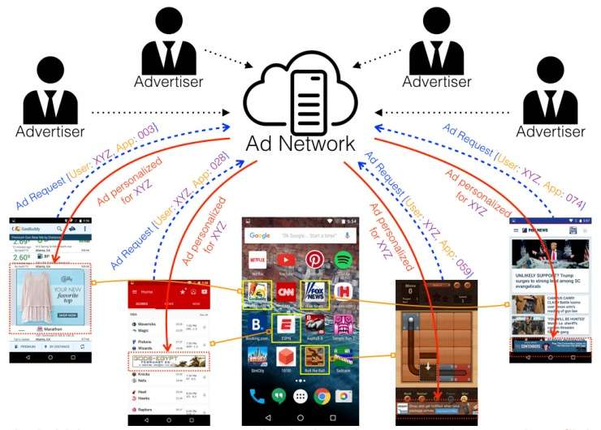

Reading Responses
When looking at The Opt Out project, I decided to read their piece on Personal Data Economy.
I appreciated how they highlighted that even if you are using an adblocker and are not experiencing the adverse side effects of this economy, your data is still being used to profile those similar to yourself and perpetuate the system onto them. I find that when discussing this topic, the idea that our data impacts one another rarely comes up, and in reality these large collections of data are mainly useful because of the fact that they allow trends to be drawn and patterns of groups to be predicted. Data privacy is as much a communal struggle and goal as it is a personal, individual one.

“People need a familiar environment to deal with a little friction,” a quote from Cypurr Collective organizer Imani Thompson. Something we can keep in mind when designing disturbances is, ironically, how to make them accessible and alluring enough for people to engage with. This is a tightrope to walk, but can enhance projects and get them greater reach and impact when done well. The example in the article of using Wonderville is a great case of doing this with a good touch. I enjoy the idea of a guided seminar on divesting yourself from these platforms, as the information regarding that process can be dense and confusing. I hope to catch a future event they organize, but notice that the collective's online presence seems to be inactive as of this spring.

Final Project
I decided on building a prototype of a browser extension called forgetme that will wipe history and cookies on a rolling basis as my final project. I decided on this direction over my other proposed plan (building a tool that would allow users to parse through their data profile) because I was more attracted to the idea of an active intervention than a passive information tool. Something that we made a point of in class was the fact it would wipe passwords. Deciding to implement this feature and then thinking about how it changes my behaviour with my browser has pushed me to finally switch to an external password manager, which is a much safer choice than my previous method. It’s actions like this that I hope this modification will inspire in its users.